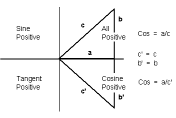

R. T. RUSSELL
BBC BASIC (86) Manual
A function giving the absolute value of its argument.
X = ABS(deficit)
length = ABS(X1-X2)
This function converts negative numbers into positive ones. It can
be used to give the difference between two numbers without regard to
the sign of the answer.
It is particularly useful when you want to know the difference between
two values, but you don't know which is the larger. For instance, if
X=6 and Y=10 then the following examples would give the same result.
difference = ABS(X-Y)
difference = ABS(Y-X)
You can use this function to check that a calculated answer is within
certain limits of a specified value. For example, suppose you wanted
to check that 'answer' was equal to 'ideal' plus or minus (up to)
0.5. One way would be:
IF answer>ideal-0.5 AND answer<ideal+0.5 THEN....
However, the following example would be a more elegant solution.
IF ABS(answer-ideal)<0.5 THEN....
Syntax
<n-var>=ABS(<numeric>)
Associated Keywords
SGN
A function giving the arc cosine of its argument in radians. The
permitted range of the argument is -1 to +1.
If you know the cosine of the angle, this function
will tell you the angle (in radians). Unfortunately, you cannot do
this with complete certainty because two angles within the range +/-
PI (+/- 180 degrees) can have the same cosine. This means that one
cosine has two associated angles.
The following diagram illustrates the problem:

Within the four quadrants, there are two angles which
have the same cosine, two with the same sine and two with the same tangent. When
you are working back from the cosine, sine or tangent you don't know
which of the two possible angles is correct.
By convention, ACS gives a result in the top two quadrants (0 to PI
- 0 to 180 degrees) and ASN and ATN
in the right-hand two quadrants (-PI/2 to +PI/2 - -90 to + 90 degrees).
In the example below, 'radian_angle' becomes equal to the angle (in
radians) whose cosine is 'y'.
radian_angle=ACS(y)
You can convert the answer to degrees by using the
DEG function (or multiplying by 180/PI).
degree_angle=DEG(ACS(y))
Syntax
<n-var>=ACS(<numeric>)
Associated Keywords
ASN,
ATN,
SIN,
COS,
TAN,
RAD,
DEG
This function returns information about the analogue to digital converter
channels on the Games Adapter card (if fitted). The information returned
depends upon the argument passed to ADVAL.
If the argument is positive (1 to 4),
ADVAL returns a value proportional to the resistance of the joysticks
or games paddles. The value is scaled to the range 0 to 65280. However,
the value returned depends on the processor clock frequency and its
absolute value cannot be relied upon.
adcval=ADVAL(3)
level=ADVAL(chnumber)
ADVAL(0) returns a value in the
range 0 to 15 corresponding to the state of the four fire buttons. Zero
is returned if no buttons are pressed and 15 is returned if all four
buttons are pressed.
ADVAL(-6) returns the number
of free spaces in the sound queue. If the sound queue is empty, ADVAL(-6)
will return 14. If the queue is (nearly) full, ADVAL(-6) will
return 0.
In BBCBASIC(86), ADVAL with any negative number
will return the number of free spaces in the sound queue; you should
use -6 to maximise compatibility with the BBC Micro.
Syntax
<n-var>=ADVAL(<numeric>)
Associated Keywords
SOUND,
INPUT,
GET
The operation of integer bitwise logical AND between two items. The
2 operands are internally converted to four byte integers before the
AND operation.
answer=num1 AND num2
char=byte AND &7F
IF (num AND &F0)
test=(count=3 AND total=5)
You can use AND as a logical operator or as a 'bit-by-bit' (bitwise)
operator. The operands can be boolean (logical) or numeric.
In the following example program segment, AND is used as a bitwise
operator to remove the most significant bit of a byte read from a
file before writing it to another file. This is useful for converting
some word-processor files into standard ASCII format.
210 byte=BGET#infile AND &7F
220 BPUT#outfile,byte
Unfortunately,
BBCBASIC does not have true boolean variables; it uses numeric variables
and assigns the value 0 for FALSE and -1 for TRUE. This can lead
to confusion at times. (See NOT for more details.)
In the example below, the operands are boolean (logical). In other
words, the result of the tests (IF) A=2 and (IF) B=3 is either TRUE
or FALSE. The result of this example will be TRUE if A=2 and B=3.
answer=(A=2 AND B=3)
The brackets are not necessary, they have been included to make the
example easier to follow.
The second example is similar to the first, but in the more familiar
surroundings of an IF statement.
IF A=2 AND B=3 THEN 110
or
answer= A=2 AND B=3 (without brackets this time)
IF answer THEN 110
The final example, uses the AND in a similar fashion to the numeric
operators (+, -, etc).
A=X AND 11
Suppose X was -20, the AND operation would be:
11111111 11111111 11111111 11101100
00000000 00000000 00000000 00001011
00000000 00000000 00000000 00001000 = 8
Syntax
<n-var>=<numeric> AND <numeric>
Associated Keywords
EOR,
OR,
FALSE,
TRUE,
NOT
A function returning the ASCII character value of the first character
of the argument string. If the string is null then -1 will be
returned.
A computer only understands numbers. In order to deal with characters,
each character is assigned a code number. For example (in the ASCII
code table) the character 'A' is given the code number 65 (decimal). A
part of the computer generates special electronic signals which cause
the characters to be displayed on the screen. The signals generated
vary according to the code number.
Different types of computer use different numbers for the characters. The
codes used for PC Compatible computers are those defined by the American
Standard Code for Information Interchange (ASCII). A list of the
ASCII codes is at Annex A.
You could use this function to convert ASCII codes to some other coding
scheme.
| ascii_code=ASC("H") |
Result would be 72 |
| X=ASC("HELLO") |
Result would be 72 |
|
| name$="FRED" |
| ascii_code=ASC(name$) |
Result would be 70 |
| X=ASC"e" |
Result would be 101 |
|
| X=ASC(MID$(A$,position)) |
Result depends on A$ and position. |
ASC is the complement of CHR$.
Syntax
<n-var>=ASC(<str>)
Associated Keywords
CHR$,
STR$,
VAL
A function giving the arc sine of its argument in radians. The permitted
range of the argument is -1 to +1.
By convention, the result will be in the range -PI/2 to +PI/2
(-90 to +90 degrees).
If you know the sine of the angle, this function will tell you the
angle (in radians). Unfortunately, you cannot do this with complete
certainty because one sine has two associated angles. (See ACS for details.)
In the example below, 'radian_angle' becomes equal to the angle (in
radians) whose sine is 'y'.
radian_angle=ASN(y)
You can convert the answer to degrees by using the DEG function. (The
DEG function is equivalent to multiplying by 180/PI.) The example
below is similar to the first one, but the angle is in degrees.
degree_angle=DEG(ASN(y))
Syntax
<n-var>=ASN(<numeric>)
Associated Keywords
ACS,
ATN,
SIN,
COS,
TAN,
RAD,
DEG
A function giving the arc tangent of its argument in radians. The
permitted range of the argument is from - to + infinity.
By convention, the result will be in the range -PI/2 to +PI/2
(-90 to +90 degrees).
If you know the tangent of the angle, this function will tell you
the angle (in radians).
As the magnitude of the argument (tangent) becomes very large (approaches
+ or - infinity) the accuracy diminishes.
In the example below, 'radian_angle' becomes equal to the angle (in
radians) whose tangent is 'y'.
radian_angle=ATN(y)
You can convert the answer to degrees by using the DEG function. (The
DEG function is equivalent to multiplying by 180/PI.) The example
below is similar to the first one, but the angle is in degrees.
degree_angle=DEG(ATN(y))
Syntax
<n-var>=ATN(<numeric>)
Associated Keywords
ACS,
ASN,
SIN,
COS,
TAN,
RAD,
DEG
A command allowing the user to enter lines without first typing in
the number of the line. The line numbers are preceded by the usual
prompt (>).
You can use this command to tell the computer to type the line numbers
automatically for you when you are entering a program (or part of
a program).
If AUTO is used on its own, the line numbers will start at 10 and
go up by 10 for each line. However, you can specify the start number
and the value by which the line numbers will increment. The step
size can be in the range 1 to 255.
You cannot use the AUTO command within a program or a multi-statement
command line.
You can leave the AUTO mode by pressing the escape key.
AUTO start_number,step_size
| AUTO |
offers line numbers 10, 20, 30 ... |
| AUTO 100 |
starts at 100 with step 10 |
| AUTO 100,1 |
starts at 100 with step 1 |
| AUTO ,2 |
starts at 10 with step 2 |
A hyphen is an acceptable alternative to a comma.
Syntax
AUTO [<n-const> [,<n-const>]]
Associated Keywords
None
A function which gets a byte from the file whose file handle
is its argument. The file pointer is incremented after the byte has
been read.
E=BGET#n
aux=BGET#3
You must normally have opened a file using OPENOUT,
OPENIN or OPENUP before
you use this statement. (See these keywords and the BBCBASIC(86)
Disk Files section for details.) BGET# may alternatively be used with the AUX device
(usually a serial port) which has the 'permanently open' handle = 3.
You can use BGET# to read single bytes
from a disk file. This enables you to read back small integers which
have been 'packed' into fewer than 5 bytes (see BPUT#). It is also
very useful if you need to perform some conversion operation on a
file. Each byte read is numeric, but you can use CHR$(BGET#n) to
convert it to a string.
The input file in the example below is a text file produced by a word-processor.
Words to be underlined are 'bracketed' with ^S. The program produces
an output file suitable for a printer which expects such words to
be bracketed by ^Y. You could, of course, perform several such translations
in one program.
10 REM Open i/p and o/p files. End if error.
20 infile=OPENIN "WSFILE.DOC"
30 IF infile=0 THEN END
40 outfile=OPENOUT "BROTH.DOC"
50 IF outfile=0 THEN END
60 :
70 REM Process file, converting ^S to ^Y
80 REPEAT
90 temp=BGET#infile :REM Read byte
100 IF temp=&13 THEN temp=&19 :REM Convert ^S
110 BPUT#outfile,temp :REM Write byte
120 UNTIL temp=&1A :REM ^Z
130 CLOSE#0 :REM Close all files
140 END
To make the program more useful, it could ask for the names
of the input and output files at 'run time':
10INPUT "Enter name of INPUT file " infile$
20 INPUT "Enter name of OUTPUT file " outfile$
30 REM Open i/p and o/p files. End if error.
40 infile=OPENIN(infile$)
50 IF infile=0 THEN END
60 outfile=OPENOUT(outfile$)
70 IF outfile=0 THEN END
80 :
90 REM Process file, converting ^S to ^Y
100 REPEAT
110 temp=BGET#infile :REM Read byte
120 IF temp=&13 THEN temp=&19 :REM Convert ^S
130 BPUT#outfile,temp :REM Write byte
140 UNTIL temp=&1A :REM ^Z
150 CLOSE#0 :REM Close all files
160 END
Syntax
<n-var>=BGET#<numeric>
Associated Keywords
OPENIN,
OPENUP,
OPENOUT,
CLOSE#,
PRINT#,
INPUT#,
BGET#,
EXT#,
PTR#,
EOF#
A statement which puts a byte to the data file whose file handle is
the first argument. The second argument's least significant byte
is written to the file. The file pointer is incremented after the
byte has been written.
BPUT#E,32
BPUT#staff_file,A/256
BPUT#4,prn
Before you use this statement you must normally have opened a file for output
using OPENOUT or OPENUP. (See these keywords and the BBCBASIC(86) Disk Files section for details.)
BPUT# may alternatively be used with the AUX device
(usually a serial port), which has the 'permanently open' handle = 3, or the PRN
device (usually a parallel port) which has the 'permanently open' handle = 4.
You can use this statement to write single
bytes to a disk file. The number that is sent to the file is in the
range 0 to 255. Real numbers are converted internally to integers
and the top three bytes are 'masked off'. Each byte written is numeric,
but you can use ASC(character$) to convert (the first character of)
'character$' to a number.
The example below is a program segment that 'packs' an integer number
between 0 and 65535 (&FFFF) into two bytes, least significant byte first. The
file must have already been opened for output and the file handle
stored in 'fnum'. The integer variable number% contains the value
to be written to the file.
100 BPUT#fnum,number% MOD 256
110 BPUT#fnum,number% DIV 256
Syntax
BPUT#<numeric>,<numeric>
Associated Keywords
OPENIN,
OPENUP,
OPENOUT,
CLOSE#,
PRINT#,
INPUT#,
BGET#,
EXT#,
PTR#,
EOF#
A statement to call a machine code subroutine.
CALL Muldiv,A,B,C,D
CALL &FFE3
CALL 12340,A$,M,J$
There are significant differences between BBCBASIC and BIGBASIC.
The processor's AX, BX, CX and DX
registers are initialised to the least significant words of A%, B%,
C% and D% respectively (see also USR).
FLAGS is initialised to the
least significant word of F%. However, you cannot disable interrupts
nor enter single-step mode by setting F% to an appropriate value because
this could be dangerous.
The four segment
registers (CS, DS, SS and ES) are all set to the address of BBCBASIC's
data segment. (Not BIGBASIC)
Your machine-code routine MUST return to BBCBASIC(86) with a far return
(RETF), not a simple RET instruction.
CALL and USR operate differently when addresses in the range &FF00
to &FFFF are used. See the Operating System Interface section for more details and an example of the use of CALL.
CALL sets up a table in RAM containing details of the parameters. The
base pointer (BP) is set to the address of this parameter table.
Variables included in the parameter list need not have been declared
before the CALL statement.
The parameter types are:
| Code No | Parameter Type |
|---|
| 0: | byte (8 bits) | eg ?A% |
| 4: | word (32 bits) | eg !A% or A% |
| 5: | real (40 bits) | eg A |
| 128: | fixed string | eg $A% |
| 129: | movable string | eg A$ |
On entry to the subroutine the parameter table contains the following
values (Not BIGBASIC):
| Number of parameters | 1 byte (at BP) |
| |
| Parameter type | 1 byte (at BP+1) |
| Parameter address | 2 bytes (at BP+2 BP+3 LSB first) |
| |
| Parameter type | )repeated as often as necessary. |
| Parameter address | ) |
Except in the case of a movable string (normal string variable), the
parameter address given is the absolute address at which the item
is stored. In the case of movable strings (type 129), it is the address
of a parameter block containing the current length, the maximum length
and the start address of the string, in that order
Integer variables are stored in
twos complement format with their least significant byte first.
Fixed
strings are stored as the characters of the string followed by a carriage
return (&0D).
Floating
point variables are stored in binary floating point format with their
least significant byte first. The fifth byte is the exponent. The
mantissa is stored as a binary fraction in sign and magnitude format. Bit
7 of the most significant byte is the sign bit and, for the purposes
of calculating the magnitude of the number, this bit is assumed to
be set to one. The exponent is stored as a positive integer in excess
127 format. (To find the exponent subtract 127 from the value in
the fifth byte.)
If the exponent of a floating point number is zero, the number is
stored in integer format in the mantissa. If the exponent is not
zero, then the variable has a floating point value. Thus, an integer
can be stored in two different formats in a real variable. For example,
5 can be stored as
& 00 00 00 05 00 Integer 5
or
& 20 00 00 00 82 (.5+.125) * 2^3 = 5
(the &20 becomes &A0 because the MSB is always assumed)
In the case of a movable string (normal string variable), the parameter
address points to the 'string descriptor'. This descriptor gives
the current length of the string, the number of bytes allocated to
the string (the maximum length of the string) and the address of the
start of the string (LSB first).
The following segment of code is taken from the inventory
program in the BBCBASIC(86) Disk Files section.
There are no native
clear-to-end-of-line or clear-to-end-of-screen functions. These two
functions are provided by the program segment below which makes use
of the standard MS-DOS (PC DOS) INT&10 routine. The machine code
element is limited to line PROC_assemble which starts at line 3610. (See
the MS-DOS Programmers' Guide for details of the action of INT&10.)
This program segment makes room for the simple assembly language routine
which is called by the clear to end of line/screen procedures and
then assembles the routine. Only one pass is needed because there
are no forward references. (See the 'Assembler' section for details.)
2080 DIM code 3
2090 PROC_assemble
The two following
procedures rely on MODE 3 being selected.
They will not work
properly if a graphics mode has been selected or if some characters
on the screen have attributes set.
3450 DEF PROC_cteol
3460 LOCAL x
3470 x=POS
3480 A%=&A20:B%=0:C%=80-x:D%=0
(Write space character 80-x times from the current cursor position.)
3490 CALL int10
3500 ENDPROC
3510 :
3520 :
3530 DEF PROC_cteos
3540 LOCAL x,y
3550 x=POS:y=VPOS
3560 A%=&A20:B%=0:C%=80-x+(24-y)*80:D%=0
(Write space character 80-x + (24-y)*80 times from the current
cursor position.)
3570 CALL int10
3580 ENDPROC
3590 :
3600 :
3610 DEF PROC_assemble
3620 P%=code
3630 [OPT 2
3640 .int10 INT &10
3650 RETF:]
3660 ENDPROC
You could perform a similar function by setting the text window to
the area of the screen you wished to clear and then issuing the CLS
command. This would have the advantage of being less dependent on
the computer's hardware interface.
Syntax
CALL <numeric>{,<n-var>|<s-var>}
Associated Keywords
USR
A statement which loads and runs the program whose name is specified
in the argument.
CHAIN "GAME1"
CHAIN A$
The program file must be in tokenised format.
All but the static variables @% to Z% are CLEARed.
CHAIN sets ON ERROR OFF before chaining the specified program.
RUN may be used as an alternative to CHAIN.
You can use CHAIN (or RUN) to link program modules together. This
allows you to write modular programs which would, if written in one
piece, be too large for the memory available.
Passing
data between CHAINed programs can be a bit of a problem because COMMON
variables cannot be declared and all but the static variables are
cleared by CHAIN.
If you wish to pass large amounts of data between CHAINed programs,
you should use a data file. However, if the amount of data to be
passed is small and you do not wish to suffer the time penalty of
using a data file, you can pass data to the CHAINed program by using
the indirection operators to store them at known addresses. The safest
way to do this is to move HIMEM down
and store common data at the top of memory.
The following sample program segment moves HIMEM down 100 bytes and
stores the input and output file names in the memory above HIMEM. There
is, of course, still plenty of room for other data in this area.
100 HIMEM=HIMEM-100
110 $HIMEM=in_file$
120 $(HIMEM+13)=out_file$
130 CHAIN "NEXTPROG"
Syntax
CHAIN <str>
Associated Keywords
LOAD,
RUN,
SAVE
A function which returns a string of length 1 containing the ASCII
character specified by the least significant byte of the numeric argument.
A$=CHR$(72)
B$=CHR$(12)
C$=CHR$(A/200)
CHR$ generates an ASCII character
(symbol, letter, number character, control character, etc) from the
number given. The number specifies the position of the generated
character in the ASCII table (See Annex A).
For example:
char$=CHR$(65)
will set char$ equal to the character 'A'.
You can use CHR$ to send a special
character to the terminal or printer. (Generally, VDU
is better for sending characters to the screen.) For example,
CHR$(7)
will generate the ASCII character ^G. So,
PRINT "ERROR"+CHR$(7)
will print the message 'ERROR' and sound the PC's 'bell'.
CHR$ is the complement of ASC.
Syntax
<s-var>=CHR$(<numeric>)
Associated Keywords
ASC,
STR$,
VAL,
VDU
A statement which clears all the dynamically declared variables, including
strings. CLEAR does not affect the static variables.
The CLEAR command tells BBCBASIC(86) to 'forget' about ALL the dynamic
variables used so far. This includes strings and arrays, but the
static variables (@% to Z%) are not altered.
You can use the indirection
operators to store integers and strings at known addresses
and these will not be affected by CLEAR. However, you will need to
'protect' the area of memory used. The easiest way to do this is
to move HIMEM down.
See CHAIN for an example.
Syntax
CLEAR
Associated Keywords
None
A statement used to close a data file. CLOSE #0 will close all data
files.
CLOSE#file_num
CLOSE#0
You use CLOSE# to tell BBCBASIC(86) that you have completely finished
with a data file for this phase of the program. Any data still in
the file buffer is written to the file before the file is closed.
You can open and close a file several times within one program, but
it is generally considered 'better form' not to close a file until
you have finally finished with it. However, if you wish to CLEAR
the variables, it is simpler if you close the data files first.
You should also close data files before chaining
another program. CHAIN does not automatically close data files, but
it does clear the variables in which the file handles were stored. You
can still access the open file if you have used one of the static
variables (A% to Z%) to store the file handle. Alternatively, you
could reserve an area of memory (by moving HIMEM
down for example) and use the byte indirection operator to store the file handle. (See
the keyword CHAIN for more details.)
END or 'dropping
off' the end of a program will also close all open data files. However,
STOP does not close data files.
Syntax
CLOSE#<numeric>
Associated Keywords
OPENIN,
OPENUP,
OPENOUT,
PRINT#,
INPUT#,
BPUT#,
BGET#,
EXT#,
PTR#,
EOF#
A statement which clears the graphics area of the screen and sets
it to the currently selected graphics background colour using the
current background plotting action (set by GCOL).
The position of the graphics cursor is unchanged.
See the Graphics and Colours section
or GCOL for more information
on graphics colours.
Syntax
CLG
Associated Keywords
CLS,
GCOL
A statement which clears the text area of the screen and sets it to
the currently selected text background colour. The text cursor is
moved to the 'home' position (0,0) at the top left-hand corner of
the text area.
See the Graphics and Colours section
or COLOUR for more information on text colours.
Syntax
CLS
Associated Keywords
CLG,
COLOUR
You can set the text foreground and background colours with the COLOUR
(or VDU 17) command.
The keyword COLOUR is followed by a number. If the number
is less than 128, the colour of the text is set. If the number is
128 or greater, the colour of the background is set.
There are up to 16 logical colours, but the
number available varies with the mode. The logical colour numbers
available to each mode are listed below with the physical colours
allocated to them on power-up.
Mode 0
| Foreground | Background | Colour |
|---|
| COLOUR 0 | COLOUR 128 | Black |
| COLOUR 1 | COLOUR 129 | White |
You can change the physical to logical colour mapping
(palette) using the VDU 19 command.
Modes 1, 2, 4 & 5
| Foreground | Background | Colour |
|---|
| COLOUR 0 | COLOUR 128 | Black |
| COLOUR 1 | COLOUR 129 | Magenta |
| COLOUR 2 | COLOUR 130 | Cyan |
| COLOUR 3 | COLOUR 131 | White |
You can change the physical to logical colour mapping (palette) using
the VDU 19 command.
Modes 8, 9, 10, 12, 13, 16 and 18
| Foreground | Background | Colour |
|---|
| COLOUR 0 | COLOUR 128 | Black |
| COLOUR 1 | COLOUR 129 | Red |
| COLOUR 2 | COLOUR 130 | Green |
| COLOUR 3 | COLOUR 131 | Yellow |
| COLOUR 4 | COLOUR 132 | Blue |
| COLOUR 5 | COLOUR 133 | Magenta |
| COLOUR 6 | COLOUR 134 | Cyan |
| COLOUR 7 | COLOUR 135 | White |
| COLOUR 8 | COLOUR 136 | Intensified Black |
| COLOUR 9 | COLOUR 137 | Intensified Red |
| COLOUR 10 | COLOUR 138 | Intensified Green |
| COLOUR 11 | COLOUR 139 | Intensified Yellow |
| COLOUR 12 | COLOUR 140 | Intensified Blue |
| COLOUR 13 | COLOUR 141 | Intensified Magenta |
| COLOUR 14 | COLOUR 142 | Intensified Cyan |
| COLOUR 15 | COLOUR 143 | Intensified White |
You can change the physical to logical colour mapping
(palette) using the VDU 19 command.
Modes 3, 6, 11 & 14
| Foreground | Background | Colour |
|---|
| COLOUR 0 | COLOUR 128 | Black |
| COLOUR 1 | COLOUR 129 | Red |
| COLOUR 2 | COLOUR 130 | Green |
| COLOUR 3 | COLOUR 131 | Yellow |
| COLOUR 4 | COLOUR 132 | Blue |
| COLOUR 5 | COLOUR 133 | Magenta |
| COLOUR 6 | COLOUR 134 | Cyan |
| COLOUR 7 | COLOUR 135 | White |
| COLOUR 8 | | Intensified Black |
| COLOUR 9 | | Intensified Red |
| COLOUR 10 | | Intensified Green |
| COLOUR 11 | | Intensified Yellow |
| COLOUR 12 | | Intensified Blue |
| COLOUR 13 | | Intensified Magenta |
| COLOUR 14 | | Intensified Cyan |
| COLOUR 15 | | Intensified White |
| COLOUR 16 | | Black |
| COLOUR 17 | | Flashing red |
| COLOUR 18 | | Flashing green |
| COLOUR 19 | | Flashing yellow |
| COLOUR 20 | | Flashing blue |
| COLOUR 21 | | Flashing magenta |
| COLOUR 22 | | Flashing cyan |
| COLOUR 23 | | Flashing white |
| COLOUR 24 | | Intensified Flashing black |
| COLOUR 25 | | Intensified Flashing red |
| COLOUR 26 | | Intensified Flashing green |
| COLOUR 27 | | Intensified Flashing yellow |
| COLOUR 28 | | Intensified Flashing blue |
| COLOUR 29 | | Intensified Flashing magenta |
| COLOUR 30 | | Intensified Flashing cyan |
| COLOUR 31 | | Intensified Flashing white |
Flashing colours
alternate between the specified colour and the current background
colour. You can only use the 'normal' colours for the background.
There is no normal palette in modes 3, 6, 11 and 14. However, you
can change the physical to logical colour mapping with the
VDU 19 command if you use the enhanced palette.
Syntax
COLOUR<numeric>
Associated Keywords
VDU,
GCOL,
MODE
A function giving the cosine of its radian argument.
X=COS(angle)
This function returns the cosine of an angle. The angle must be expressed
in radians, not degrees.
Whilst the computer is quite
happy dealing with angles expressed in radians, you may prefer to
express angles in degrees. You can use the RAD
function to convert an angle from degrees to radians.
The example below sets Y to the cosine of the angle 'degree_angle'
expressed in degrees.
Y=COS(RAD(degree_angle))
Syntax
<n-var>=COS(<numeric>)
Associated Keywords
SIN,
TAN,
ACS,
ASN,
ATN,
DEG,
RAD
A function returning the number of characters sent to the output stream
(VDU or printer) since the last new line.
char_count=COUNT
Characters with an ASCII value of
less than 13 (carriage return/new-line/enter) have no effect on COUNT.
Because control characters above 13 are included in COUNT,
you cannot reliably use it to find the position of the cursor on the
screen. If you need to know the cursor's horizontal position use
the POS function.
Count is NOT set to zero
if the output stream is changed using the *OPT command.
The example below prints strings from the string array 'words$'. The
strings are printed on the same line until the line length exceeds
65. When the line length is in excess of 65, a new-line is printed.
90 ....
100 PRINT
110 FOR i=1 TO 1000
120 PRINT words$(i);
130 IF COUNT>65 THEN PRINT
140 NEXT
150 ....
Syntax
<n-var>=COUNT
Associated Keywords
POS
A program object which must precede all lists of data for use by the
READ statement.
As for INPUT, string values may
be quoted or unquoted. However,
quotes need to be used if the string contains commas or leading spaces.
Numeric values may include calculation so long as there are no keywords.
Data items in the list should be separated by a comma.
DATA 10.7,2,HELLO," THIS IS A COMMA,",1/3,PRINT
DATA " This is a string with leading spaces."
You can use DATA in conjunction with READ to
include data in your program which you may need to change from time
to time, but which does not need to be different every time you run
the program.
The following example program segment reads through a list of names
looking for the name in 'name$'. If the name is found, the name and
age are printed. If not, an error message is printed.
100 DATA FRED,17,BILL,21,ALLISON,21,NOEL,32
110 DATA JOAN,26,JOHN,19,WENDY,35,ZZZZ,0
120 REPEAT
130 READ list$,age
140 IF list$=name$ THEN PRINT name$,age
150 UNTIL list$=name$ OR list$="ZZZZ"
160 IF list$="ZZZZ" PRINT "Name not in list"
Syntax
DATA <s-const>|<n-const>{,<s-const>|<n-const>}
Associated Keywords
READ,
RESTORE
A program object which must precede declaration of a user defined
function (FN) or procedure (PROC). DEF must be used at the start
of a program line.
If DEF is encountered
during execution, the rest of the line is ignored. As a consequence,
single line definitions can be put anywhere in the program.
Multi-line
definitions must not be executed. The safest place to put multi-line
definitions is at the end of the main program after the END statement.
There is no speed advantage to be gained by placing function or procedure
definitions at the start of the program.
DEF FNMEAN ....
DEF PROCJIM ....
In order to make the text more readable (always a GOOD THING)
the function or procedure name may start with an underline.
DEF FN_mean ....
DEF PROC_Jim$ ....
Function and procedure names may end with a '$'. This is not compulsory
for functions which return strings.
A procedure
definition is terminated by the statement ENDPROC.
A function definition is terminated by a statement which starts with
an equals (=) sign. The function returns the value of the expression
to the right of the equals sign.
For examples of function and procedure declarations, see
FN and PROC. For
a general explanation of functions and procedures, refer to the
Procedures and Functions sub-section in the
General Information section.
Syntax
DEF PROC<name>[(<s-var>|<n-var>{,<s-var>|<n-var>})]
DEF FN<name>[(<s-var>|<n-var>{,<s-var>|<n-var>})]
Associated Keywords
ENDPROC,
FN,
PROC
A function which converts radians to degrees.
degree_angle=DEG(PI/2)
X=DEG(ATN(1))
You can use this function to convert an angle expressed in radians
to degrees. One radian is approximately 57 degrees (actually 180/PI). PI/2
radians is 90 degrees and PI radians is 180 degrees.
Using DEG is equivalent to multiplying the radian value by 180/PI,
but the result is calculated internally to a greater accuracy.
See ACS, ASN and
ATN for further examples of the use of DEG.
Syntax
<n-var>=DEG(<numeric>)
Associated Keywords
RAD,
SIN,
COS,
TAN,
ACS,
ASN,
ATN,
PI
A command which deletes a group of lines from the program. Both start
and end lines of the group will be deleted.
You can use DELETE to remove a number of lines from your program. To
delete a single line, just type the line number followed by <Enter>.
The example below deletes all the lines between line 10 and 15 (inclusive).
DELETE 10,15
To delete up to a line from the beginning of the program, use 0 as
the first line number. The following example deletes all the lines
up to (and including) line 120.
DELETE 0,120
To delete from a given line to the end of the program, use 65535 as
the last line number. To delete from line 2310 to the end of the
program, type:
DELETE 2310,65535
A hyphen is an acceptable alternative to a comma.
Syntax
DELETE <n-const>,<n-const>
Associated Keywords
EDIT,
LIST,
OLD,
NEW
There are two quite different uses for the DIM statement: the first
dimensions an array and the second reserves an area of memory for
special applications.
The DIM statement is used to declare arrays. Arrays must be pre-declared
before use and they must not be re-dimensioned. Both numeric and
string arrays may be multi dimensional.
DIM A(2),Ab(2,3),A$(2,3,4),A%(3,4,5,6)
After DIM, all elements in the array are 0/null.
The subscript
base is 0, so DIM X(12) defines an array of 13 elements.
Arrays are like lists or tables. A list of
names is a single dimension array. In other words, there is only
one column - the names. Its single dimension in a DIM statement would
be the maximum number of names you expected in the table less 1.
If you wanted to describe the position of the pieces on a chess board
you could use a two dimensional array. The two dimensions would represent
the row (numbered 0 to 7) and the column (also numbered 0 to 7). The
contents of each 'cell' of the array would indicate the presence (if
any) of a piece and its value.
DIM chess_board(7,7)
Such an array would only represent the chess board at one moment of
play. If you wanted to represent a series of board positions you
would need to use a three dimensional array. The third dimension would
represent the 'move number'. Each move would use about 320 bytes
of memory, so you could record 40 moves in about 12.5k bytes.
DIM chess_game(7,7,40)
A DIM statement is used to reserve an area of memory which the interpreter
will not then use. The variable in the DIM statement is set by BBCBASIC(86)
to the start address of this memory area. This reserved area can
be used by the indirection operators, machine code, etc.
The example below reserves 68 bytes of memory and sets A% equal to the address of the first byte. Thus A%?0 to A%?67 are free for use by the program (68 bytes in all):
DIM A% 67
A 'DIM space' error will
occur if a size of less than -1 is used
(DIM P% -2). DIM P%-1 is a special case; it reserves zero
bytes of memory. This is of more use than you might think, since
it tells you the limit of the dynamic variable allocation. Thus,
DIM P% -1
PRINT HIMEM-P%
is the equivalent of PRINT FREE(0) in some other versions of BASIC.
See the Assembler section for a more detailed description of the
use of DIM for reserving memory for machine code programs.
Syntax
DIM <n-var>|<s-var>(<numeric>{,<numeric>})
DIM <n-var> <numeric>
Associated Keywords
CLEAR
A binary operation giving the integer quotient of two items. The
result is always an integer.
X=A DIV B
y=(top+bottom+1) DIV 2
You can use this function to give the 'whole number' part of the answer
to a division. For example,
21 DIV 4
would give 5 (with a 'remainder' of 1).
Whilst it is possible to use DIV
with real numbers, it is really intended for use with integers. If
you do use real numbers, BBCBASIC(86) converts them to integers by
truncation before DIViding them.
Syntax
<n-var>=<numeric> DIV <numeric>
Associated Keywords
MOD
A statement which draws a line on the screen in the graphics modes. The
statement is followed by the X and Y coordinates of the end of the
line.
The start of the line is either the end of the last line drawn or
a point specified by a MOVE statement.
The graphics origin (X=0, Y=0) is normally the bottom left of the
screen. The origin can be changed using the VDU29
command (graphics modes only).
See the Graphics and Colours section for more details.
The line is drawn in the current graphics foreground colour. This
colour can be changed using the GCOL statement.
DRAW x,y
MOVE 200,300
DRAW 640,800
This statement is identical to PLOT 5.
Syntax
DRAW <numeric>,<numeric>
Associated Keywords
MODE,
PLOT,
MOVE,
CLG,
VDU,
GCOL
A command to edit or concatenate and edit the specified program line(s). The
specified lines (including their line numbers) are listed as a single
line. By changing only the line number, you can also use EDIT to
duplicate a line.
EDIT 230
EDIT 200,230
The following control
functions are active in both the immediate and edit modes.
 | Move the cursor up. |
 | Move the cursor down. |
 | Move the cursor left one character. |
 | Move the cursor right one character. |
| Ctrl/ | Move the cursor to the start of the line. |
| Ctrl/ | Move the cursor to the end of the line. |
| BackSpace | Backspace and delete |
| Delete | Delete the character at the cursor. |
| Insert | Toggle between the insert and overwrite modes. In the insert mode, the cursor is an underline; in the overwrite mode it fills the character cell. |
| Ctrl/U | Clear line to the left of the cursor. |
| Ctrl/Enter | Clear the line to the right of the cursor. |
| Enter | Enter the line and exit the edit mode. |
| Esc | Abort and leave the line unchanged. |
| Ctrl/P | Toggle the output to the printer. |
| Tab | Copy key. See the Editing sub-section of the General Information section for more details. |
To abort the edit and leave the line unchanged, press <Esc>.
You can use this command to edit and join (concatenate) program lines. When
you use it to join lines, remember to delete any unwanted ones. The
following example concatenates lines 120 to 150.
EDIT 120,150
EDIT on its own will start at the beginning of the program and concatenate
as many lines as it can. This process will stop when the concatenated
line length exceeds 255.
A screen editor is also provided. See the Editing
sub-section in the General Information section and the command
*EDIT in the Operating
System Interface section for details.
Syntax
EDIT <l-num>
EDIT <l-num>,<l-num>
Associated Keywords
DELETE,
LIST,
OLD,
NEW
A statement delimiter which provides an alternative course of action
in IF...THEN, ON...GOSUB, ON...GOTO
and ON...PROC statements.
In an IF statement, if the test is
FALSE, the statements after ELSE will be executed.
This makes the following work:
IF A=B THEN B=C ELSE B=D
IF A=B THEN B=C:PRINT"WWW" ELSE B=D:PRINT"QQQ"
IF A=B THEN B=C ELSE IF A=C THEN...............
In a multi statement line
containing more than one IF,
the statement(s) after the ELSE delimiter
will be actioned if ANY of the tests fail. For instance, the example
below would print the error message 'er$' if 'x' did not equal
3 OR if 'a' did not equal 'b'.
IF x=3 THEN IF a=b THEN PRINT a$ ELSE PRINT er$
If you want to 'nest' the tests, you should use
a procedure call. The following example, would print 'Bad' ONLY if
x was equal to 3 AND 'a' was not equal to 'b'.
IF x=3 THEN PROC_ab_test
....
....
DEF PROC_ab_test
IF a=b THEN PRINT a$ ELSE PRINT er$
ENDPROC
You can use ELSE with ON...GOSUB,
ON...GOTO and ON...PROC
statements to prevent an out of range control variable causing an
'ON range' error.
ON action GOTO 100, 200, 300 ELSE PRINT "Error"
ON number GOSUB 100,200,300 ELSE PRINT "Error"
ON value PROCa,PROCb,PROCc ELSE PRINT "Error"
Syntax
IF <t-cond> THEN <stmt> ELSE <stmt>
ON <n-var> GOTO <l-num>{,<l-num>} ELSE <stmt>
ON <n-var> GOSUB <l-num>{,<l-num>} ELSE <stmt>
ON <n-var> PROC<name>{,PROC<name>} ELSE <stmt>
Associated Keywords:
IF,
THEN,
ON
A statement causing the interpreter to return to direct mode. There
can be any number (>=0) of END statements anywhere in a program. END
closes all open data files.
END tells BBCBASIC(86) that it has reached the end of the program. You
don't have to use END, just 'running out of program' will have the
same effect, but it's a bit messy.
You can use END within, for instance, an IF...THEN...ELSE statement
to stop your program if certain conditions are satisfied. You should
also use END to stop BBCBASIC(86) 'running into' any procedure or
function definitions at the end of your program.
Syntax
END
Associated Keywords
STOP
A statement denoting the end of a procedure.
All local variables and the dummy arguments are restored at
ENDPROC and the program returns to the statement after the calling
statement.
Syntax
ENDPROC
Associated Keywords
DEF,
FN,
PROC,
LOCAL
A statement which is used, in conjunction with the SOUND
statement, to control the pitch of a sound whilst it is playing.
During its 'life' the volume and
pitch of a sound may change. The variation of volume with time is
called the amplitude envelope and the variation of pitch with time
is called the pitch envelope. In BBC BASIC, there are four phases of
loudness (the attack phase, the decay phase, the sustain phase and
the release phase) and three phases of pitch. The four amplitude phases
and the three pitch phases are defined separately based on a common 'step'
duration.
Because of hardware limitations,
the ENVELOPE statement in PC BBCBASIC(86) is restricted. It is implemented
to the same extent as on the Acorn Electron. That is, the pitch envelope
is implemented, but the amplitude envelope is not.
You may use the ENVELOPE statement to define up to 12 different pitch
envelopes. Envelopes 1 to 4 may be freely used. Envelopes 5 to 12
may be used provided no file-related operations (including star commands)
are performed. If a file operation is performed, it will work correctly,
but the envelope data may be corrupted.
The envelopes are referred to by number in the SOUND
statement.
The ENVELOPE statement has 14 parameters. The syntax of the ENVELOPE
statement is:
ENVELOPE <parameter list>
The parameter list has the format shown below. All the
parameters must be supplied, but because only the pitch envelope is
implemented, the last 6 parameters of the ENVELOPE statement are ignored.
N,T,PI1,PI2,PI3,PN1,PN2,PN3,AA,AD,AS,AR,ALA,ALD
For compatibility with the BBC Micro, the last 6 parameters are best set to 126, 0,
0, -126, 126 and 126.
| Param | Range | Function |
|---|
| N | 1 to 4(12) | Envelope number. |
| T(bits 0-6) | 0 to 127 | Length of each step in hundredths
of a second. |
| T(bit 7) | 0 or 1 | 0=Auto repeat the pitch envelope.
1=Don't auto repeat. |
| PI1 | -128 to 127 | Change of pitch per step in section 1. |
| PI2 | -128 to 127 | Change of pitch per step in section 2. |
| PI3 | -128 to 127 | Change of pitch per step in section 3. |
| PN1 | 0 to 255 | Number of steps in section 1. |
| PN2 | 0 to 255 | Number of steps in section 2. |
| PN3 | 0 to 255 | Number of steps in section 3. |
| The following parameters have no effect in BBCBASIC(86): |
| AA | Set to 126 | Change of amplitude per step during the attack phase. |
| AD | Set to 0 | Change of amplitude per step during the decay phase. |
| AS | Set to 0 | Change of amplitude per step during the sustain phase. |
| AR | Set to -126 | Change of amplitude per step during the release phase. |
| ALA | Set to 126 | Target of level at the end of the attack phase. |
| ALD | Set to 126 | Target of level at the end of decay phase. |
Syntax
ENVELOPE <numeric>, <numeric>, <numeric>, <numeric>, <numeric>, <numeric>, <numeric>, <numeric>, <numeric>, <numeric>, <numeric>, <numeric>, <numeric>, <numeric>
Associated Keywords
SOUND

 © Doug Mounter and
Richard Russell
© Doug Mounter and
Richard Russell